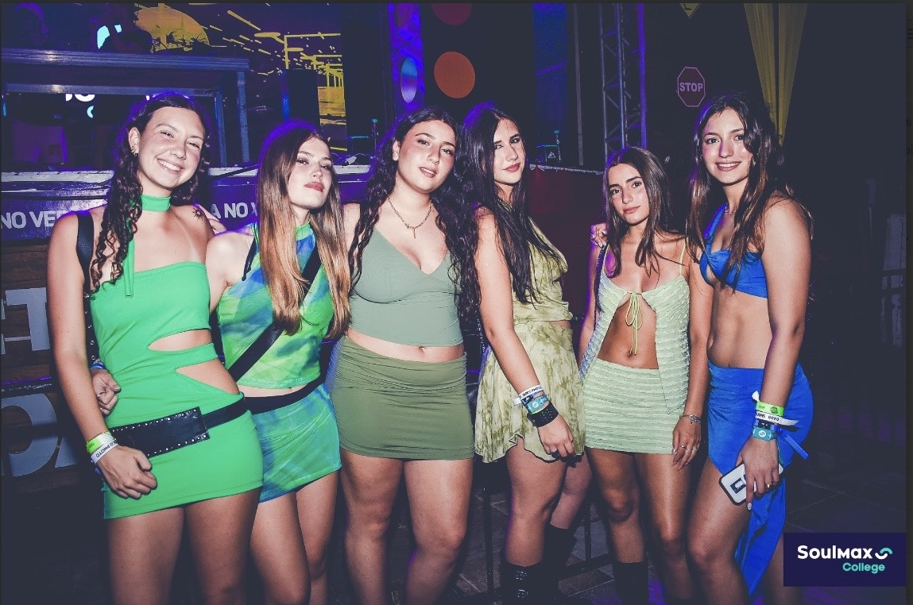

Toa Beach fue la playa en la que tuvimos las fiestas de día, pero también algunas de noche. La primera vez que fuimos fue nuestra primera noche en Porto que teníamos la fiesta semáfro. Después volvimos al día siguiente, que nos tocó la fuiesta de colores de día. Unos días más tarde fuimos de vuelta, también de día, para la fiesta de la espuma. Para cerrar fuimos una vez más la octava noche, que fue un inesperado regalo, y repetimos la fiesta semáforo.